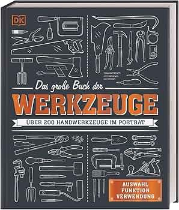

📖《工具大百科》收录了人类历史上各式各样的工具，从史前的石器到现代的电动工具，从木匠的刨子到电工的万用表。每一件工具都有详细的图解和使用说明。
这本书不仅是工具的图鉴，更是人类技术文明发展的缩影。
作为一个喜欢动手的人，这本书让我大开眼界——原来人类发明了这么多工具来解决各种问题！从简单的锤子、螺丝刀，到复杂的电钻、切割机，每一件工具都是智慧的结晶。
书里收集的工具确实够老的，有些传统手工具在现代已经很少见了。比如各种木工刨子、传统的手摇钻，虽然效率不如电动工具，但设计精巧程度令人叹服。读完这本书，我对手工工具有了全新的认识。虽然现在很多人更依赖专业人员，但知道什么时候该用什么工具，至少是一个成年人应该具备的基本技能。